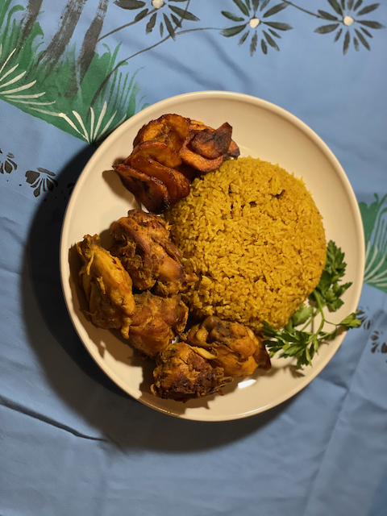

Fried Curry Rice
Thai Coconut Curry Rice With Vegetables

his Thai-inspired spin on fried rice combines fluffy white rice with creamy coconut milk, warm curry spices and plenty of fresh vegetables
Ingredients
- 1 cup long-grain white rice
- 2 Tbsp Thai red curry paste
- 1 (14-ounce) can light coconut milk
- 1/2 cup water
- 1/2 tsp salt
- 1 large carrot peeled and thinly sliced
- 1 medium zucchini sliced and quartered
- 1 small red pepper thinly sliced
- 2 green onions white and green parts sliced
- 2 cloves garlic minced
- 1/3 cup roasted cashews or peanuts roughly chopped
Steps
- Combine rice, coconut milk, water, red curry paste and salt in a medium saucepan.
- Bring to a boil, stir gently then cover with a tight-fitting lid.
- Reduce heat and simmer for 15-17 minutes or until rice is almost done
- While rice is cooking, add 2 teaspoons coconut oil to a large skillet placed over medium-high heat.
- Stir rice into vegetable mixture. Stir in basil and chopped cashews. Serve with lime wedges.